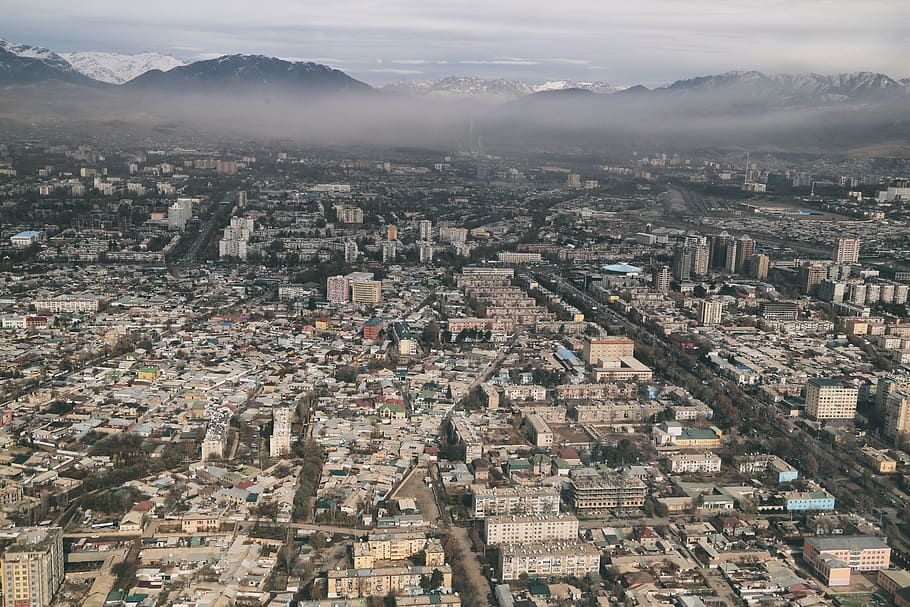

Talas Weighs Building Up or Out as Houses Creep Over Fields and Foothills
With no decision taken, City Hall says it is listening to experts on how to house newcomers without losing the valley's irrigated land.

Photo: IradOne
TALAS — As the heating season shows how far the capital now stretches, an old question has returned to Talas: should the city's new housing go up or out? The built-up area already covers about 250 square kilometres of the valley floor on both banks of the Talas River.
One answer is height: the nine-storey Microdistricts south of the railway, and the Zavodskoy and Vokzal districts. The Microdistricts, the Soviet housing between the station and Talas State University, are already the densest part of the city, with about 170,000 people. The other answer is space: the kolkhoz-era fields at the edges, and the foothill slopes above Etek, the newest edge of Talas, which the city began allotting in 2009 as large private plots. Concrete mudflow channels now run down from the hills behind its two-storey houses.
Dr Myktybek Abylov, an agronomist at Talas State University, says the choice has a price that does not show on a plot map. "Every private plot laid out on irrigated land is hay, potatoes or orchard lost for good," he said. "The foothills bring a different cost, which is mudflow risk. Neither is a reason to stop building, but both are reasons to count before we build."
Marat Usupov, who runs a tyre shop on the Trans-Talas road and buys about 60 bales of hay every autumn for his two horses at the Hippodrome stables, put it more plainly. Hay is 26 som a bale today, he said, and "a field that becomes a yard does not give hay back."
Mayor Erkin Asanbaev said City Hall has announced no change to the rules on where building is allowed. "This is a discussion, not a decision," he said. "The city will look at all options and listen to specialists on how to house newcomers while keeping the valley's fields." The Köhne Diz protected zone, about 64 hectares of the Old City, is not part of the debate.
In the meantime, building carries on within the present rules. Talas Turak-Jay Kurulush is putting up a 495-flat mortgage complex of eleven nine-storey blocks on city land in western Talas, due in 2027. Prices and lenders have not been published.
The same argument is heard in Chu District. Nurzhan's built-up area is about 200 square kilometres, mostly private houses, and its northern and western edge quarters, among them Jangy-Konush and Uzun-Aryk, keep spreading over canal land. As in Talas, no decision has been announced.
More from IradOne
- Sales Tax on Pump Fuel Rises 9% to 468 Million Som in Ten Months November 24, 2026
- Five-Year Roads Record: 340 km Laid, 112 Machines Added, 38 Ploughs for Passes November 24, 2026
- ISEZ Closes 2026 Harvest at 486,300 Tonnes of Grain as Silos Fill November 23, 2026
- Chatkal Survey Tunnel Passes 800 Metres; Iradenergo Calls Cascade "a Study" November 23, 2026